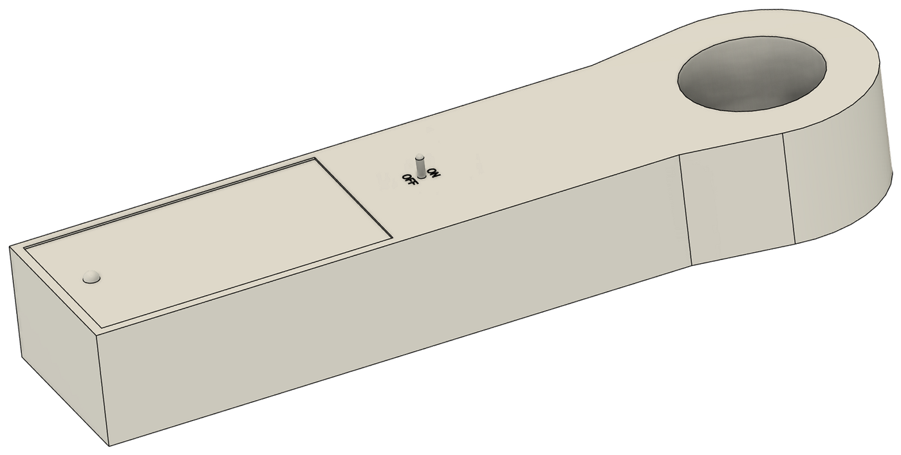

Projects
A small collection of early projects, and hopefully the first of many. I'm still building up my CAD and hands-on device design skills, and each project so far has taught me something new: the vein finder was my first solo CAD build start to finish, and the hearing aid project has me learning to design as part of a team. I'm looking forward to getting a lot more practice in, and to watching this page grow alongside it.

assets/img/vein-finder/cad/vein-finder-top-angle.png" data-shape="landscape" style="width:100%;display:block;object-fit:contain;aspect-ratio:16/10;background:var(--paper-card);">Vein Finder
An infrared vein finding device designed as my senior capstone project, from initial research and reasoning through CAD modeling and final construction.
View Project →
Hearing Aid, Solar Ear Collaboration
A magnetic energy harvesting pendulum for a low-cost, sustainable hearing aid, developed with the Integrative Design subteam at Engineering World Health in collaboration with Solar Ear. Focused on circuit design and testing for the energy harvesting system.
View Project →